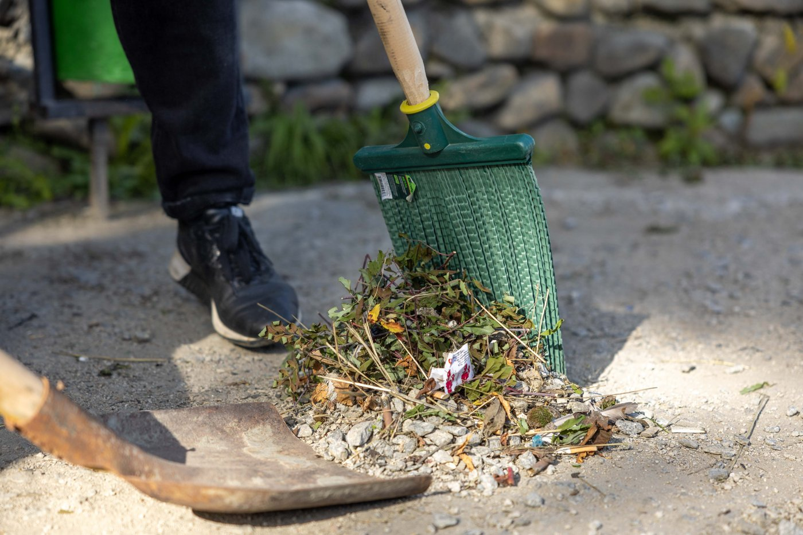

Let the leaves fall.
We’ll take it from here.
Fall cleanup, leaf removal and lawn care in Hatfield and surrounding communities. A better-looking yard starts with one conversation.
A fresh start.
For the season ahead.
Leaf removal
Lawns, walkways & garden beds

Fall yard cleanup
Leaves, branches & seasonal debris
Small details.
A well-cared-for home.
Ask about gutter cleaning and exterior maintenance for your property.
Request gutter cleaning ↗What does
your yard need?
Choose a service, tell us about the leaves and select your town. We’ll carry your choices into your quote request.
Care you can see.
Browse our original project photos, then tell us what you have in mind for your property.


A little more care.
All year round.
From a seasonal cleanup to ongoing maintenance, we help homes and businesses keep their outdoor spaces looking cared for.
Get to know Ariana’s ↗In your neighborhood.
Serving these 12 Pennsylvania communities and their surroundings. Select your area to start a request.
Before you book
Which fall services can I request?
Leaf removal, yard cleanup, gutter cleaning, hedge trimming and other exterior maintenance. Choose your main service and describe any extra work in the quote form.
What information helps you prepare a quote?
Your complete property address, the areas that need attention, leaf conditions and any gate or access instructions. Include your phone number and email so we can follow up.
Can I request more than one service?
Yes. Select your main service and list the others in “Job details”. We will discuss the scope with you before scheduling.
Does sending a request book an appointment?
No. A member of our team will contact you to discuss the work, pricing and availability before an appointment is confirmed.